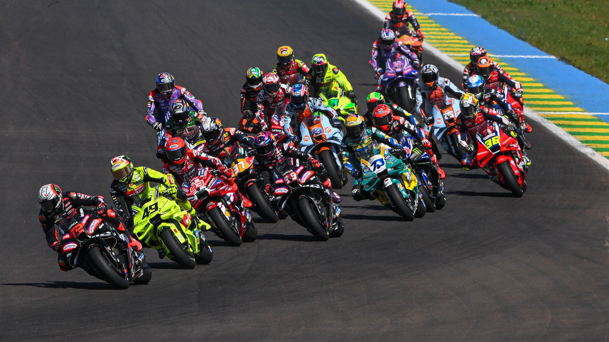
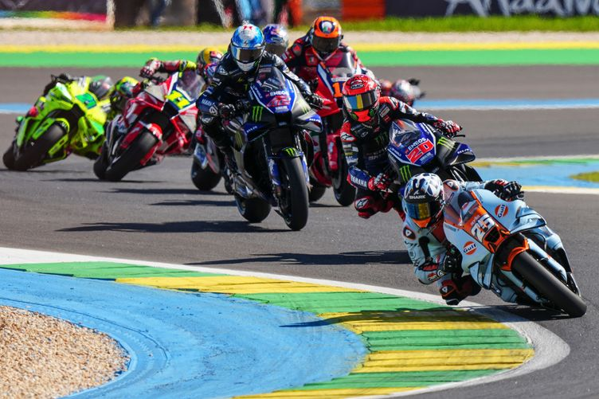

Why MotoGP Is Special
One of the most impressive parts of MotoGP is the lean angle. Riders can lean their bikes more than 60 degrees while turning at high speed. This requires balance, timing, and trust in both the tires and the machine.
MotoGP bikes use powerful 1000cc engines and advanced electronic systems. These systems help control acceleration, braking, and grip, but the rider still makes the final difference.
MotoGP is not only about speed. Riders must manage fatigue, focus, and race strategy, while making quick decisions under pressure.

Technical Philosophy
Maintaining grip at high speed is one of the most difficult parts of motorcycle racing. Riders must carefully control their body and balance through every corner.
Modern MotoGP motorcycles are extremely powerful, but riders must adapt to different tracks, weather, and race situations to perform well.
